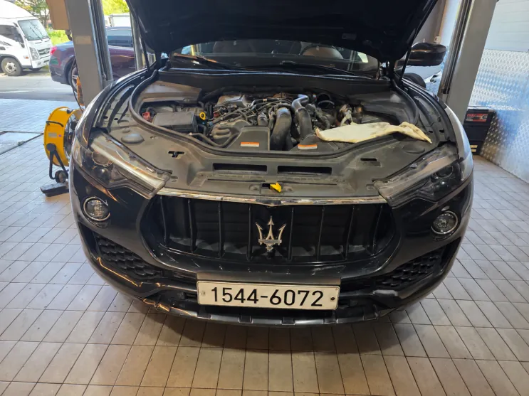
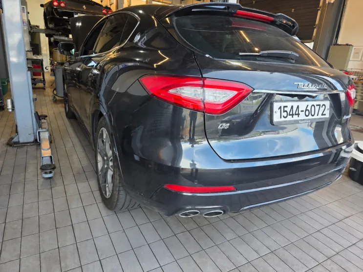
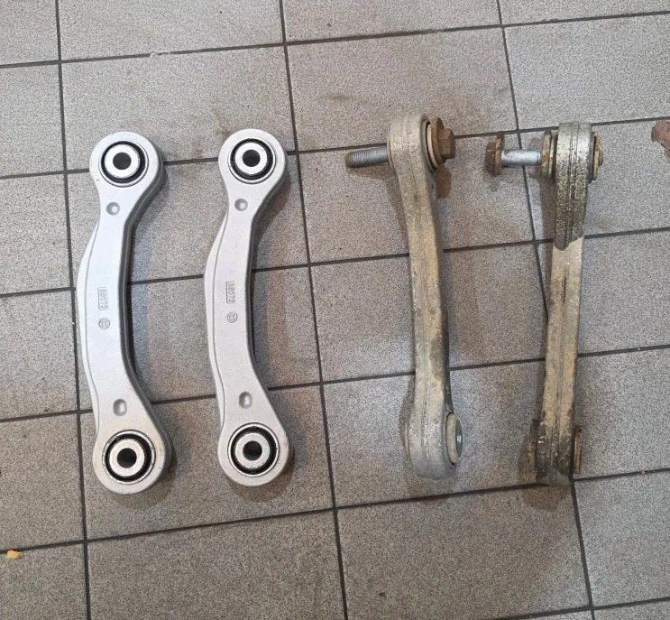
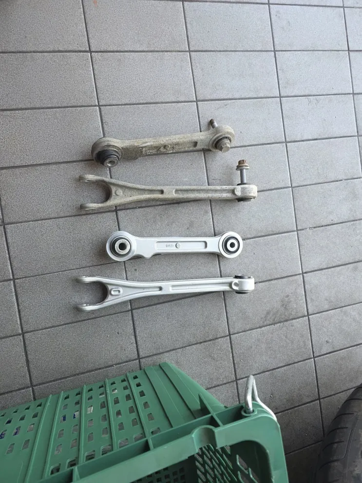
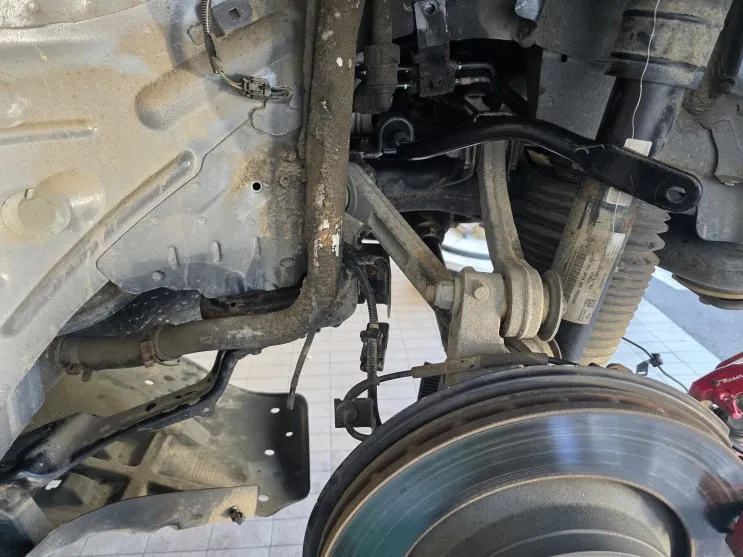
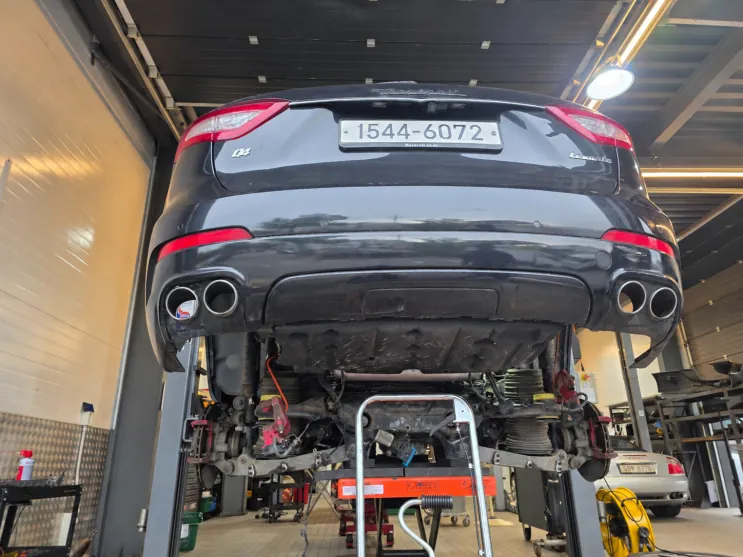

르반떼 리어 하체 소음 — 스태빌라이저·토우로드·위시본 부싱 교환
At a glance한눈에 보기
- 차량
- 마세라티 르반떼
- 증상
- 뒤쪽 하체 소음
- 진단
- 르반떼(M161) 뒤쪽 하체 소음의 주원인은 리어 스태빌라이저였고, 토우로드에서도 추가 소음이 확인됐습니다. 점검 중 찢어진 위시본 부싱도 발견해 세 부위를 구분해 함께 교환했습니다.
- 작업
- 리어 하체 점검
- 리어 스태빌라이저 교환
- 토우로드 교환
- 위시본 부싱 손상 부품 교환

입고 증상
차 뒤쪽 하체에서 소음이 난다는 르반떼(M161)였습니다. 하체 소음은 소리가 들리는 위치와 실제 원인 부품이 다르게 느껴질 때가 많아, 소리가 나는 쪽 주변 부품까지 넓게 점검했습니다.


진단 — 소음 원인을 하나씩 나누기
주된 소음은 리어 스태빌라이저에서 났고, 토우로드에서도 따로 소음이 확인됐습니다. 스태빌라이저는 코너를 돌거나 좌우 바퀴가 다르게 움직일 때 차체가 한쪽으로 지나치게 기울지 않게 잡아 주는 부품이라, 문제가 생기면 하체가 움직일 때마다 소리가 날 수 있습니다.
토우로드는 뒷바퀴가 정해진 방향을 유지하도록 붙잡아 주는 연결 부품입니다. 하체는 여러 부품이 이어져 있어 큰 소리 하나가 다른 곳의 작은 소리를 가리기도 합니다. 그래서 스태빌라이저와 토우로드를 각각 따로 확인해 수리 범위를 나눴습니다.
점검 중에는 위시본 부싱이 찢어진 것도 발견했습니다. 위시본은 바퀴와 차체를 이어 바퀴 움직임을 잡아 주는 부품이고, 부싱은 그 연결부에서 충격과 진동을 흡수하는 고무입니다. 부싱이 찢어지면 지지력이 떨어져 불필요한 움직임이나 진동이 생길 수 있습니다.

작업 내용
리어 스태빌라이저와 토우로드를 교환하고, 찢어진 위시본 부싱 쪽 하체 부품도 함께 교환했습니다. 소음의 직접 원인과 점검 중 새로 발견한 손상을 구분해 수리 범위를 정리했습니다.


하체 소음이 있다면
뒤쪽에서 나는 소음은 한 부품만의 문제가 아닐 수 있어, 주변 연결 부품까지 함께 보는 것이 좋습니다. 고무 부싱처럼 눈에 잘 띄지 않는 부위의 손상이 같이 발견되는 경우도 있습니다.
로건서비스는 경기도 파주에 있으며 전국 탁송 입고도 가능합니다. 비슷한 소음이 있다면 언제, 어떤 노면에서 나는지 적어 카톡으로 먼저 보내 주세요.

자주 묻는 질문
르반떼 뒤쪽 하체 소음은 어떤 부품에서 나나요?
이번 르반떼는 리어 스태빌라이저가 주원인이었고 토우로드에서도 소음이 확인됐습니다. 소리가 들리는 위치와 원인 부품이 다를 수 있어 주변 부품까지 함께 점검합니다.
이 작업의 원문 기록: 네이버 블로그에서 보기
Consultation
마세라티 르반떼, 비슷한 증상이 있나요?
증상 사진이나 경고등 화면을 카톡으로 먼저 보내 주시면 확인 후 안내해 드립니다. 전국 탁송 상담 가능.